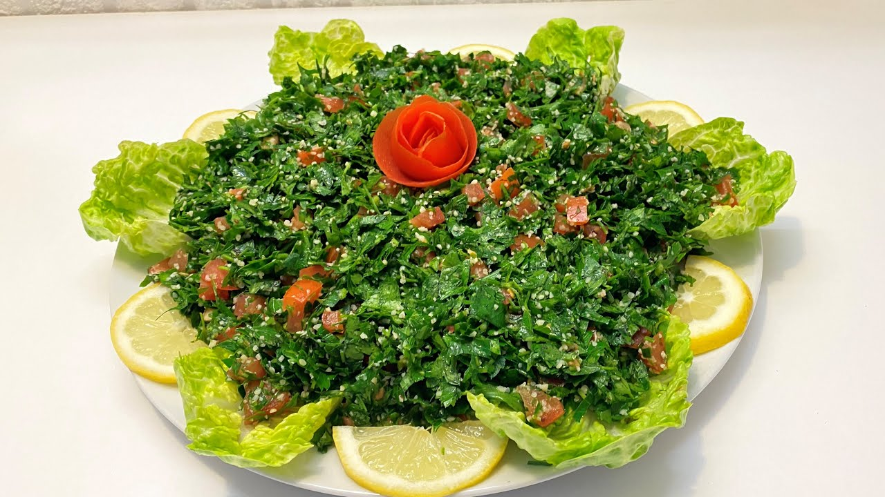

Tabbouleh is one of the most delicious appetizers there is.
It is a very light food to eat on an empty stomach and,
genuinely the most enjoyable and fullfilling

Follow the following steps:
parsley 0.5kg
1/4 tomatoes
Olive oil, half a cup
Salt 1 and a half big spoon
2 big lemons
Bulgur 2 big spoons
Green onion 1 clove
Cut the parsley into very small and tiny lines after cleaning it!
Squeeze the lemon and add the bulgur. And let it simmer for 10 mins
After the 10 mins you pour over the tomatoes, parsley and everything else. And then mix it very well, and you can style the top with some sallad!